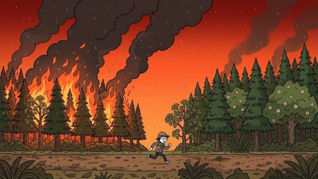

EP2 小行星撞地球
Chicxulub 小行星：寫故事前的科普準備。
EP2 進度：12／29 步
目前：回到第 10～12 步：拍攝清單 v4 等你確認（11-19）
11. 選章
決定這一集改編書的哪一章。
✅ 完成：第 2 章 Chicxulub
檢查頁：對話裡說22. 列出書上的知識點
把這一章裡所有講真實世界的事實，一條一條列出來（附原文和頁碼），先不管對錯。
✅ 完成：95 點（逐頁核對過）
檢查頁：不另外檢查，彙整進第 5 步的報告33. 查核書上的知識點
每一點上網查對不對、附出處；有問題的寫好旁白可以怎麼說。
✅ 完成
檢查頁：不另外檢查，彙整進第 5 步的報告44. 討論要補的書外知識
故事需要、但書上沒講的知識（地點、年代、環境、動物…），列出來討論要補哪些。
✅ 完成：17 點＋矮暴龍 4 點
檢查頁：我在對話列清單，你回增刪；定案的寫進報告55. 查核書外知識
補的知識也查對錯和出處；全部整理成「科普準備報告」，你決定每點用不用。
✅ 完成：17 點＋矮暴龍 4 點（11-17）
檢查頁：科普準備報告（必要產出）66. 系列設定
整個系列共用、做一次就好的設定集：①人物（HERO、博士）②人物關係（打工、賴帳）③表演方式（林克式發聲、第二人稱旁白）④畫風（粗手腳火柴人、皮膚純白）⑤固定場景和道具（實驗室、HERO 房間、校園、回家按鈕、相機、電擊槍、生存指南）。EP1 做完，之後只有要改這五類才回來。不含：各集的任務、賴帳理由（在大綱）、這集出現的恐龍或動物（大綱決定用哪些、設定圖再畫）。
➖ 跳過：沿用 EP1，沒有要改
檢查頁：設定集77. 大綱
這一集的骨架：每一段發生什麼、目的、用哪些查核過的知識點；加上固定橋段這集怎麼填（任務、忘了帶什麼、賴帳理由、接上一集的東西）和這集出現哪些動物。
🟠 等你確認：v4（11-19）：照拍攝清單 v4 對齊，17 段；等你看（outline-ep2/）
檢查頁：大綱頁88. 寫故事
照大綱寫成完整的故事。每一句旁白有用到知識點的要標編號（#12），故事頁會把科普句標成綠底、用字數算科普比例（目標 30%）。
✅ 完成：story v6（11-19）：照拍攝清單 v4 對齊，旁白沒改
檢查頁：故事頁99. 審故事
你改故事的邏輯、場景、道具、旁白，來回到定案。
🟠 等你確認：v6 等你看（story-ep2/，可跟 v5 對照）
檢查頁：故事頁：科普比例、綠底科普句、新舊對照1010. 拍攝清單＋旁白（定稿點）
把故事切成一格一格的畫面，每格配好旁白；這一步定稿後，畫面內容就不再大改。
🟠 等你確認：v4（11-19）：131 格、旁白沒改；補每段地點和環境音、每格看得到的細節、道具時間線；待你決定 6 件事（shotlist-ep2/ 最上面）
檢查頁：拍攝清單頁1111. 分幕
把同一地點、時間連續的格子合成一幕，之後設計和畫圖都以幕為單位。
🟠 等你確認：加長版 17 幕（scenes_v2，11-18 Claude 分），等你看
檢查頁：拍攝清單頁（照幕排）1212. 場景地圖
每個地點畫一張俯視地圖（樹、河、門、桌子在哪），讓同一地點的每一格畫面一致。
🟠 等你確認：沿用 8 張；11-19 補房間、學校餐廳、實驗室的窗外遠景（outside），等你看
檢查頁：拍攝清單頁每幕的地圖；要改用地圖編輯器（本機 http://127.0.0.1:8765/）1313. 設定圖
畫角色、道具、地點、這集的動物的設定圖，給 Flow 當參考圖，讓長相和大小每格一致。
✅ 完成：新畫 7 張（矮暴龍、三角龍、鼩鼱、小行星、山洞、高處土丘、學校餐廳）＋比例圖 PAIR2_NANO／TRICERA；EP2 專案共 37 張參考圖
檢查頁：新設定圖挑圖頁；定案的放設定集1414. 分鏡設計（送 request 給 Claude）
每一格決定鏡頭：拍誰、多遠、從哪個角度、人站哪裡，寫成英文 prompt。
✅ 完成：12 幕 96 格（11-17）
檢查頁：分鏡回覆查詢1515. 檢查分鏡回覆
檢查分鏡模型的回覆有沒有漏旁白、站錯位置、用了不存在的參考圖。
✅ 完成：旁白全部分配到，沒有漏句
檢查頁：我做，不用你檢查1616. 補背景和參考圖
照地圖寫每一格背景看得到什麼，決定每格附哪些參考圖。
✅ 完成：Claude 逐格手寫；新增 REF_HERO_NOBAG、REF_PLANTS、REF_SKYC_1～6（11-17～18）
檢查頁：分鏡表每格的中文 prompt、背景、參考圖1717. Flow 畫圖
把 prompt 和參考圖送進 Flow，每格畫 4 張。
✅ 完成：93 格＋HERO＋大恐龍 30 格的大小測試 B、C 版（11-18）
檢查頁：分鏡表每格的 4 張圖1818. 分鏡表＋驗收
把畫好的圖排成分鏡表，我先標建議，你看完寫意見、挑每格要哪一張。
🟠 等你確認：11-18 縮圖切偏已修（改截 Flow 大圖），Claude 建議重挑；等你挑圖
檢查頁：分鏡表（我標建議，你挑）1919. 補救
畫錯的格子決定怎麼救：改 prompt 重畫、重問分鏡，或換鏡頭。
⬜ 還沒開始
檢查頁：修改紀錄2020. 下載
把選定的圖從 Flow 下載下來。
⬜ 還沒開始
檢查頁：定稿畫面（每格你選的那張）2121. 動畫（扣點）
決定哪些格要做成動畫（要花 Flow 點數）。
⬜ 還沒開始
檢查頁：還沒有檢查頁2222. 潤旁白
把每格的旁白順成念得通順的錄音稿，意思和資訊不變。
🟠 等你確認：82 格改了 59 格，等你看對照頁（narration-smooth-ep2/）
檢查頁：旁白順稿對照2323. 旁白配音
錄旁白（你自己錄），切成每一格的聲音。
🔵 進行中：11-18 第 1 版：voice_tools 念完 81 格 7.2 分鐘（補念＋4 格拆段重念）；等你聽
檢查頁：錄音旁白對照2424. 音效
每一格配上音效。
⬜ 還沒開始
檢查頁：分鏡表、定稿畫面上的音效（定稿畫面可以試聽）2525. 配樂
選背景音樂。
⬜ 還沒開始
檢查頁：還沒有檢查頁2626. 運鏡＋組片＋字幕
加上鏡頭移動、混音、字幕，組成整集影片。
🔵 進行中：11-18 第 1 版 ep2_v1.mp4（Claude 每格挑一張、不運鏡、無音效配樂）
檢查頁：桌面上的 mp42727. 看成片
你看完整集，記下要改的地方。
🟠 等你確認：第 1 版等你看
檢查頁：桌面上的 mp4；問題在對話裡講2828. 上架（標題、縮圖、說明欄）
準備標題、縮圖、說明欄（含參考資料），上傳。
⬜ 還沒開始
檢查頁：還沒有檢查頁2929. 歐美版
換英文旁白和在地化細節，做歐美版。
⬜ 還沒開始
檢查頁：還沒有檢查頁
決定這一集改編書的哪一章。
✅ 完成：第 2 章 Chicxulub
檢查頁：對話裡說22. 列出書上的知識點
把這一章裡所有講真實世界的事實，一條一條列出來（附原文和頁碼），先不管對錯。
✅ 完成：95 點（逐頁核對過）
檢查頁：不另外檢查，彙整進第 5 步的報告33. 查核書上的知識點
每一點上網查對不對、附出處；有問題的寫好旁白可以怎麼說。
✅ 完成
檢查頁：不另外檢查，彙整進第 5 步的報告44. 討論要補的書外知識
故事需要、但書上沒講的知識（地點、年代、環境、動物…），列出來討論要補哪些。
✅ 完成：17 點＋矮暴龍 4 點
檢查頁：我在對話列清單，你回增刪；定案的寫進報告55. 查核書外知識
補的知識也查對錯和出處；全部整理成「科普準備報告」，你決定每點用不用。
✅ 完成：17 點＋矮暴龍 4 點（11-17）
檢查頁：科普準備報告（必要產出）66. 系列設定
整個系列共用、做一次就好的設定集：①人物（HERO、博士）②人物關係（打工、賴帳）③表演方式（林克式發聲、第二人稱旁白）④畫風（粗手腳火柴人、皮膚純白）⑤固定場景和道具（實驗室、HERO 房間、校園、回家按鈕、相機、電擊槍、生存指南）。EP1 做完，之後只有要改這五類才回來。不含：各集的任務、賴帳理由（在大綱）、這集出現的恐龍或動物（大綱決定用哪些、設定圖再畫）。
➖ 跳過：沿用 EP1，沒有要改
檢查頁：設定集77. 大綱
這一集的骨架：每一段發生什麼、目的、用哪些查核過的知識點；加上固定橋段這集怎麼填（任務、忘了帶什麼、賴帳理由、接上一集的東西）和這集出現哪些動物。
🟠 等你確認：v4（11-19）：照拍攝清單 v4 對齊，17 段；等你看（outline-ep2/）
檢查頁：大綱頁88. 寫故事
照大綱寫成完整的故事。每一句旁白有用到知識點的要標編號（#12），故事頁會把科普句標成綠底、用字數算科普比例（目標 30%）。
✅ 完成：story v6（11-19）：照拍攝清單 v4 對齊，旁白沒改
檢查頁：故事頁99. 審故事
你改故事的邏輯、場景、道具、旁白，來回到定案。
🟠 等你確認：v6 等你看（story-ep2/，可跟 v5 對照）
檢查頁：故事頁：科普比例、綠底科普句、新舊對照1010. 拍攝清單＋旁白（定稿點）
把故事切成一格一格的畫面，每格配好旁白；這一步定稿後，畫面內容就不再大改。
🟠 等你確認：v4（11-19）：131 格、旁白沒改；補每段地點和環境音、每格看得到的細節、道具時間線；待你決定 6 件事（shotlist-ep2/ 最上面）
檢查頁：拍攝清單頁1111. 分幕
把同一地點、時間連續的格子合成一幕，之後設計和畫圖都以幕為單位。
🟠 等你確認：加長版 17 幕（scenes_v2，11-18 Claude 分），等你看
檢查頁：拍攝清單頁（照幕排）1212. 場景地圖
每個地點畫一張俯視地圖（樹、河、門、桌子在哪），讓同一地點的每一格畫面一致。
🟠 等你確認：沿用 8 張；11-19 補房間、學校餐廳、實驗室的窗外遠景（outside），等你看
檢查頁：拍攝清單頁每幕的地圖；要改用地圖編輯器（本機 http://127.0.0.1:8765/）1313. 設定圖
畫角色、道具、地點、這集的動物的設定圖，給 Flow 當參考圖，讓長相和大小每格一致。
✅ 完成：新畫 7 張（矮暴龍、三角龍、鼩鼱、小行星、山洞、高處土丘、學校餐廳）＋比例圖 PAIR2_NANO／TRICERA；EP2 專案共 37 張參考圖
檢查頁：新設定圖挑圖頁；定案的放設定集1414. 分鏡設計（送 request 給 Claude）
每一格決定鏡頭：拍誰、多遠、從哪個角度、人站哪裡，寫成英文 prompt。
✅ 完成：12 幕 96 格（11-17）
檢查頁：分鏡回覆查詢1515. 檢查分鏡回覆
檢查分鏡模型的回覆有沒有漏旁白、站錯位置、用了不存在的參考圖。
✅ 完成：旁白全部分配到，沒有漏句
檢查頁：我做，不用你檢查1616. 補背景和參考圖
照地圖寫每一格背景看得到什麼，決定每格附哪些參考圖。
✅ 完成：Claude 逐格手寫；新增 REF_HERO_NOBAG、REF_PLANTS、REF_SKYC_1～6（11-17～18）
檢查頁：分鏡表每格的中文 prompt、背景、參考圖1717. Flow 畫圖
把 prompt 和參考圖送進 Flow，每格畫 4 張。
✅ 完成：93 格＋HERO＋大恐龍 30 格的大小測試 B、C 版（11-18）
檢查頁：分鏡表每格的 4 張圖1818. 分鏡表＋驗收
把畫好的圖排成分鏡表，我先標建議，你看完寫意見、挑每格要哪一張。
🟠 等你確認：11-18 縮圖切偏已修（改截 Flow 大圖），Claude 建議重挑；等你挑圖
檢查頁：分鏡表（我標建議，你挑）1919. 補救
畫錯的格子決定怎麼救：改 prompt 重畫、重問分鏡，或換鏡頭。
⬜ 還沒開始
檢查頁：修改紀錄2020. 下載
把選定的圖從 Flow 下載下來。
⬜ 還沒開始
檢查頁：定稿畫面（每格你選的那張）2121. 動畫（扣點）
決定哪些格要做成動畫（要花 Flow 點數）。
⬜ 還沒開始
檢查頁：還沒有檢查頁2222. 潤旁白
把每格的旁白順成念得通順的錄音稿，意思和資訊不變。
🟠 等你確認：82 格改了 59 格，等你看對照頁（narration-smooth-ep2/）
檢查頁：旁白順稿對照2323. 旁白配音
錄旁白（你自己錄），切成每一格的聲音。
🔵 進行中：11-18 第 1 版：voice_tools 念完 81 格 7.2 分鐘（補念＋4 格拆段重念）；等你聽
檢查頁：錄音旁白對照2424. 音效
每一格配上音效。
⬜ 還沒開始
檢查頁：分鏡表、定稿畫面上的音效（定稿畫面可以試聽）2525. 配樂
選背景音樂。
⬜ 還沒開始
檢查頁：還沒有檢查頁2626. 運鏡＋組片＋字幕
加上鏡頭移動、混音、字幕，組成整集影片。
🔵 進行中：11-18 第 1 版 ep2_v1.mp4（Claude 每格挑一張、不運鏡、無音效配樂）
檢查頁：桌面上的 mp42727. 看成片
你看完整集，記下要改的地方。
🟠 等你確認：第 1 版等你看
檢查頁：桌面上的 mp4；問題在對話裡講2828. 上架（標題、縮圖、說明欄）
準備標題、縮圖、說明欄（含參考資料），上傳。
⬜ 還沒開始
檢查頁：還沒有檢查頁2929. 歐美版
換英文旁白和在地化細節，做歐美版。
⬜ 還沒開始
檢查頁：還沒有檢查頁
綠＝完成／跳過／事後補 橘＝等你確認 藍＝進行中 灰＝還沒開始。滑鼠移到編號或步驟名稱上，會跳出這步在幹嘛。
29 步明細
| # | 步驟 | 狀態 | 備註 | 檢查頁 |
|---|---|---|---|---|
| 1 | 選章1. 選章 決定這一集改編書的哪一章。 ✅ 完成：第 2 章 Chicxulub 檢查頁：對話裡說 | ✅ 完成 | 第 2 章 Chicxulub | |
| 2 | 列出書上的知識點2. 列出書上的知識點 把這一章裡所有講真實世界的事實，一條一條列出來（附原文和頁碼），先不管對錯。 ✅ 完成：95 點（逐頁核對過） 檢查頁：不另外檢查，彙整進第 5 步的報告 | ✅ 完成 | 95 點（逐頁核對過） | EP2 科普準備報告 |
| 3 | 查核書上的知識點3. 查核書上的知識點 每一點上網查對不對、附出處；有問題的寫好旁白可以怎麼說。 ✅ 完成 檢查頁：不另外檢查，彙整進第 5 步的報告 | ✅ 完成 | EP2 科普準備報告 | |
| 4 | 討論要補的書外知識4. 討論要補的書外知識 故事需要、但書上沒講的知識（地點、年代、環境、動物…），列出來討論要補哪些。 ✅ 完成：17 點＋矮暴龍 4 點 檢查頁：我在對話列清單，你回增刪；定案的寫進報告 | ✅ 完成 | 17 點＋矮暴龍 4 點 | EP2 科普準備報告 |
| 5 | 查核書外知識5. 查核書外知識 補的知識也查對錯和出處；全部整理成「科普準備報告」，你決定每點用不用。 ✅ 完成：17 點＋矮暴龍 4 點（11-17） 檢查頁：科普準備報告（必要產出） | ✅ 完成 | 17 點＋矮暴龍 4 點（11-17） | EP2 科普準備報告、EP1 科普點核對（舊格式） |
| 6 | 系列設定6. 系列設定 整個系列共用、做一次就好的設定集：①人物（HERO、博士）②人物關係（打工、賴帳）③表演方式（林克式發聲、第二人稱旁白）④畫風（粗手腳火柴人、皮膚純白）⑤固定場景和道具（實驗室、HERO 房間、校園、回家按鈕、相機、電擊槍、生存指南）。EP1 做完，之後只有要改這五類才回來。不含：各集的任務、賴帳理由（在大綱）、這集出現的恐龍或動物（大綱決定用哪些、設定圖再畫）。 ➖ 跳過：沿用 EP1，沒有要改 檢查頁：設定集 | ➖ 跳過 | 沿用 EP1，沒有要改 | 人物與場景設定、恐龍系列設定（這個時代） |
| 7 | 大綱7. 大綱 這一集的骨架：每一段發生什麼、目的、用哪些查核過的知識點；加上固定橋段這集怎麼填（任務、忘了帶什麼、賴帳理由、接上一集的東西）和這集出現哪些動物。 🟠 等你確認：v4（11-19）：照拍攝清單 v4 對齊，17 段；等你看（outline-ep2/） 檢查頁：大綱頁 | 🟠 等你確認 | v4（11-19）：照拍攝清單 v4 對齊，17 段；等你看（outline-ep2/） | EP2 大綱 |
| 8 | 寫故事8. 寫故事 照大綱寫成完整的故事。每一句旁白有用到知識點的要標編號（#12），故事頁會把科普句標成綠底、用字數算科普比例（目標 30%）。 ✅ 完成：story v6（11-19）：照拍攝清單 v4 對齊，旁白沒改 檢查頁：故事頁 | ✅ 完成 | story v6（11-19）：照拍攝清單 v4 對齊，旁白沒改 | EP2 故事 |
| 9 | 審故事9. 審故事 你改故事的邏輯、場景、道具、旁白，來回到定案。 🟠 等你確認：v6 等你看（story-ep2/，可跟 v5 對照） 檢查頁：故事頁：科普比例、綠底科普句、新舊對照 | 🟠 等你確認 | v6 等你看（story-ep2/，可跟 v5 對照） | EP2 故事、恐龍年代兩集：審故事（EP1） |
| 10 | 拍攝清單＋旁白（定稿點）10. 拍攝清單＋旁白（定稿點） 把故事切成一格一格的畫面，每格配好旁白；這一步定稿後，畫面內容就不再大改。 🟠 等你確認：v4（11-19）：131 格、旁白沒改；補每段地點和環境音、每格看得到的細節、道具時間線；待你決定 6 件事（shotlist-ep2/ 最上面） 檢查頁：拍攝清單頁 | 🟠 等你確認 | v4（11-19）：131 格、旁白沒改；補每段地點和環境音、每格看得到的細節、道具時間線；待你決定 6 件事（shotlist-ep2/ 最上面） | EP2 拍攝清單（切格＋分幕＋地圖）、恐龍年代兩集：拍攝清單（EP1） |
| 11 | 分幕11. 分幕 把同一地點、時間連續的格子合成一幕，之後設計和畫圖都以幕為單位。 🟠 等你確認：加長版 17 幕（scenes_v2，11-18 Claude 分），等你看 檢查頁：拍攝清單頁（照幕排） | 🟠 等你確認 | 加長版 17 幕（scenes_v2，11-18 Claude 分），等你看 | EP2 拍攝清單（切格＋分幕＋地圖） |
| 12 | 場景地圖12. 場景地圖 每個地點畫一張俯視地圖（樹、河、門、桌子在哪），讓同一地點的每一格畫面一致。 🟠 等你確認：沿用 8 張；11-19 補房間、學校餐廳、實驗室的窗外遠景（outside），等你看 檢查頁：拍攝清單頁每幕的地圖；要改用地圖編輯器（本機 http://127.0.0.1:8765/） | 🟠 等你確認 | 沿用 8 張；11-19 補房間、學校餐廳、實驗室的窗外遠景（outside），等你看 | EP2 拍攝清單（切格＋分幕＋地圖）、EP1 分鏡表 v7 |
| 13 | 設定圖13. 設定圖 畫角色、道具、地點、這集的動物的設定圖，給 Flow 當參考圖，讓長相和大小每格一致。 ✅ 完成：新畫 7 張（矮暴龍、三角龍、鼩鼱、小行星、山洞、高處土丘、學校餐廳）＋比例圖 PAIR2_NANO／TRICERA；EP2 專案共 37 張參考圖 檢查頁：新設定圖挑圖頁；定案的放設定集 | ✅ 完成 | 新畫 7 張（矮暴龍、三角龍、鼩鼱、小行星、山洞、高處土丘、學校餐廳）＋比例圖 PAIR2_NANO／TRICERA；EP2 專案共 37 張參考圖 | EP2 新設定圖：挑圖、人物與場景設定、恐龍系列設定 |
| 14 | 分鏡設計（送 request 給 Claude）14. 分鏡設計（送 request 給 Claude） 每一格決定鏡頭：拍誰、多遠、從哪個角度、人站哪裡，寫成英文 prompt。 ✅ 完成：12 幕 96 格（11-17） 檢查頁：分鏡回覆查詢 | ✅ 完成 | 12 幕 96 格（11-17） | 分鏡回覆查詢 |
| 15 | 檢查分鏡回覆15. 檢查分鏡回覆 檢查分鏡模型的回覆有沒有漏旁白、站錯位置、用了不存在的參考圖。 ✅ 完成：旁白全部分配到，沒有漏句 檢查頁：我做，不用你檢查 | ✅ 完成 | 旁白全部分配到，沒有漏句 | 分鏡回覆查詢 |
| 16 | 補背景和參考圖16. 補背景和參考圖 照地圖寫每一格背景看得到什麼，決定每格附哪些參考圖。 ✅ 完成：Claude 逐格手寫；新增 REF_HERO_NOBAG、REF_PLANTS、REF_SKYC_1～6（11-17～18） 檢查頁：分鏡表每格的中文 prompt、背景、參考圖 | ✅ 完成 | Claude 逐格手寫；新增 REF_HERO_NOBAG、REF_PLANTS、REF_SKYC_1～6（11-17～18） | EP1 分鏡表 v7 |
| 17 | Flow 畫圖17. Flow 畫圖 把 prompt 和參考圖送進 Flow，每格畫 4 張。 ✅ 完成：93 格＋HERO＋大恐龍 30 格的大小測試 B、C 版（11-18） 檢查頁：分鏡表每格的 4 張圖 | ✅ 完成 | 93 格＋HERO＋大恐龍 30 格的大小測試 B、C 版（11-18） | EP1 分鏡表 v7 |
| 18 | 分鏡表＋驗收18. 分鏡表＋驗收 把畫好的圖排成分鏡表，我先標建議，你看完寫意見、挑每格要哪一張。 🟠 等你確認：11-18 縮圖切偏已修（改截 Flow 大圖），Claude 建議重挑；等你挑圖 檢查頁：分鏡表（我標建議，你挑） | 🟠 等你確認 | 11-18 縮圖切偏已修（改截 Flow 大圖），Claude 建議重挑；等你挑圖 | EP1 分鏡表 v7 |
| 19 | 補救19. 補救 畫錯的格子決定怎麼救：改 prompt 重畫、重問分鏡，或換鏡頭。 ⬜ 還沒開始 檢查頁：修改紀錄 | ⬜ 還沒開始 | EP1 修改紀錄 | |
| 20 | 下載20. 下載 把選定的圖從 Flow 下載下來。 ⬜ 還沒開始 檢查頁：定稿畫面（每格你選的那張） | ⬜ 還沒開始 | EP1 定稿畫面 | |
| 21 | 動畫（扣點）21. 動畫（扣點） 決定哪些格要做成動畫（要花 Flow 點數）。 ⬜ 還沒開始 檢查頁：還沒有檢查頁 | ⬜ 還沒開始 | ||
| 22 | 潤旁白22. 潤旁白 把每格的旁白順成念得通順的錄音稿，意思和資訊不變。 🟠 等你確認：82 格改了 59 格，等你看對照頁（narration-smooth-ep2/） 檢查頁：旁白順稿對照 | 🟠 等你確認 | 82 格改了 59 格，等你看對照頁（narration-smooth-ep2/） | EP2 旁白順稿對照、EP1 旁白順稿對照 |
| 23 | 旁白配音23. 旁白配音 錄旁白（你自己錄），切成每一格的聲音。 🔵 進行中：11-18 第 1 版：voice_tools 念完 81 格 7.2 分鐘（補念＋4 格拆段重念）；等你聽 檢查頁：錄音旁白對照 | 🔵 進行中 | 11-18 第 1 版：voice_tools 念完 81 格 7.2 分鐘（補念＋4 格拆段重念）；等你聽 | EP1 錄音旁白對照 |
| 24 | 音效24. 音效 每一格配上音效。 ⬜ 還沒開始 檢查頁：分鏡表、定稿畫面上的音效（定稿畫面可以試聽） | ⬜ 還沒開始 | EP1 定稿畫面 | |
| 25 | 配樂25. 配樂 選背景音樂。 ⬜ 還沒開始 檢查頁：還沒有檢查頁 | ⬜ 還沒開始 | ||
| 26 | 運鏡＋組片＋字幕26. 運鏡＋組片＋字幕 加上鏡頭移動、混音、字幕，組成整集影片。 🔵 進行中：11-18 第 1 版 ep2_v1.mp4（Claude 每格挑一張、不運鏡、無音效配樂） 檢查頁：桌面上的 mp4 | 🔵 進行中 | 11-18 第 1 版 ep2_v1.mp4（Claude 每格挑一張、不運鏡、無音效配樂） | |
| 27 | 看成片27. 看成片 你看完整集，記下要改的地方。 🟠 等你確認：第 1 版等你看 檢查頁：桌面上的 mp4；問題在對話裡講 | 🟠 等你確認 | 第 1 版等你看 | |
| 28 | 上架（標題、縮圖、說明欄）28. 上架（標題、縮圖、說明欄） 準備標題、縮圖、說明欄（含參考資料），上傳。 ⬜ 還沒開始 檢查頁：還沒有檢查頁 | ⬜ 還沒開始 | ||
| 29 | 歐美版29. 歐美版 換英文旁白和在地化細節，做歐美版。 ⬜ 還沒開始 檢查頁：還沒有檢查頁 | ⬜ 還沒開始 |
第 2～5 步科普
EP2 科普準備報告照新流程寫故事前先查科普：書上第 2 章 95 點＋書外 21 點（隕石介紹、撞擊點、矮暴龍等），每點判定、出處、建議旁白說法（正確 59、大致正確 46、有爭議 3、有誤 3、找不到出處 1）。
第 7 步大綱
EP2 大綱 v4（加長）第 7 步的檢查點：照拍攝清單 v4 對齊的 17 段，每段發生什麼、用到哪些知識點都跟拍攝清單一致；固定橋段這集怎麼填。
第 8～9 步故事
EP2 故事 v6（加長版）第 8、9 步的檢查點：照拍攝清單 v4 對齊的加長版故事，旁白沒改；段落名稱跟拍攝清單一樣，補上出發進時光機，小玻璃珠不發紅。可以跟 v5 逐段對照。
第 10～12 步拍攝清單
EP2 拍攝清單（加長版）第 10～12 步的檢查點：拍攝清單 v4，131 格分成 17 幕，每格畫面、旁白、聲音、看得到的細節，每段的地點和環境音、道具時間線、每幕的地圖；最上面是待你決定的 6 件事。

EP2 定稿畫面（加長版）拍攝清單 131 格照劇情順序排，每格是影片現在放的那張（目前 Claude 挑的）＋旁白；131 格都有圖（2026-11-19 補畫 11 格；HERO 跟大恐龍同框的 12 格換成 C 版重畫：附比例圖＋說明句）。
第 13 步設定圖
EP2 新設定圖第 13 步：矮暴龍、三角龍、鼩鼱、小行星、山洞、高處土丘、學校餐廳，每張 4 個候選、逐張檢查和選定理由；真實照片參考（公有領域）。
第 14～18 步分鏡表
EP2 分鏡表12 幕 96 格，每幕附地圖；每格畫好的 4 張（點圖開 Flow）、景別、角度、相機位置、構圖、完整 prompt 中文、參考圖。93 格全部畫好；HERO＋大恐龍 30 格有 B、C 兩種大小版本；每格標了大小判定和 Claude 建議，等你挑。
第 14～18 步分鏡表（加長版）
EP2 分鏡表（加長版）故事 v5 加長後要新畫的 68 格：月亮的坑、撞擊十分鐘、生存指南、三個時間點、後來、怎麼找到它；每格完整中文 prompt、Flow 畫好的 4 張。其他格沿用第 1 版分鏡表的圖。
第 22 步潤旁白
EP2 旁白順稿對照第 22 步的檢查點：82 格旁白請 Claude CLI 順過（可以改寫、資訊不能掉、每格內容留在原格），改了 59 格；每幕每格原本 ↔ 順過並排，有改的標底色，小字是改了什麼。